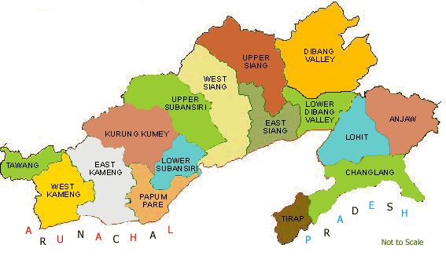

Arunachal Pradesh, situated in northeastern India, is renowned for its breathtaking landscapes and rich cultural heritage.
Known as the "Land of the Dawn-Lit Mountains," it offers stunning views of the Eastern Himalayas and lush green valleys.
The state is celebrated for its diverse ethnic communities, vibrant festivals, and traditional arts and crafts.
Key attractions include the Tawang Monastery, the stunning lakes of Bum La Pass, and the serene beauty of Ziro Valley.
Arunachal Pradesh's natural beauty and cultural diversity make it a unique and captivating destination for travelers.
|
 |